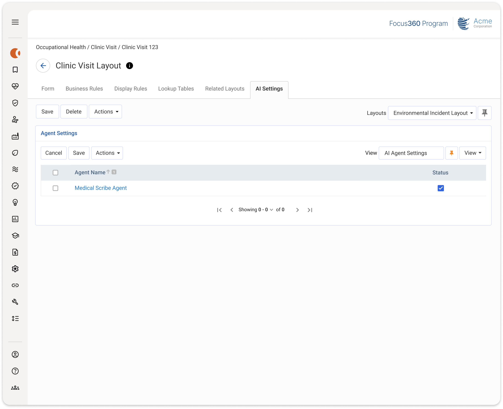
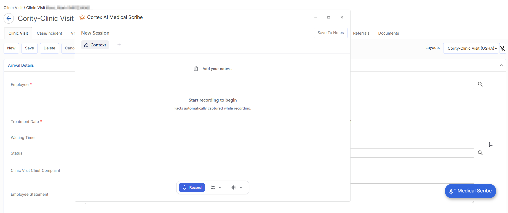

The Medical Scribe Agent can be used to record patient-clinician conversations during clinic visits and generate structured notes and summaries, allowing clinicians to stay focused on patients.
Enabling Medical Scribe
To enable Medical Scribe for a clinic visit:
Create a new Clinic Visit.
Medical Scribe must be added to the Clinic Visit Layout.
From the AI Settings tab, check the checkbox for Medical Scribe Agent.
The Medical Scribe Agent will only appear if it has been activated in the Cortex AI Control Center.
Click Save.

Using Medical Scribe
While viewing a Clinic Visit with the Medical Scribe Agent active, users can click the Medical Scribe button to start a session.
Medical Scribe prompts a consent warning on behalf of the patient that must be accepted before recording begins. If accepted, Medical Scribe will open within the specific Clinic Visit. If declined, Medical Scribe does not open and the next time Medical Scribe is used, the consent prompt reappears. Consent acceptance (or denial) is saved to the Clinic Visit record and cannot be edited by the user.

In the Medical Scribe window, you can do the following:
Click Record to begin recording the clinic visit. Once the recording begins, you can pause and resume the recording as needed. When the recording is paused, you can review or edit the notes within the context window.
Click Show Settings and configure the following:
Choose the input device to use for recording.
Select the input language (language support is dependent on region). For example, if the agent should be listening to English or Spanish.
Use the Virtual mode toggle to capture audio virtually from desktop, window or tab.
Click Show Transcript to view the recording transcript.
Click Generate to generate a document with the context and notes from the recording.
Generate a Medical Scribe Note
Once a recording is finished, you can generate a note that includes a summary of the conversation. To generate the note, do the following:
Click Generate.
Select the type of note.
Select the language for the output (language support is dependent on region).
Click Generate.
Review the note. You can make edits directly in the note by typing or by recording additional information.
Click Save to Notes to finish generating the note for the record. A new note is generated for the visit record.
Complete the remaining Clinic Visit information. The Note Date, Note Time, and Author are automatically populated.
Click Save to save the note to the Clinic Visit record.